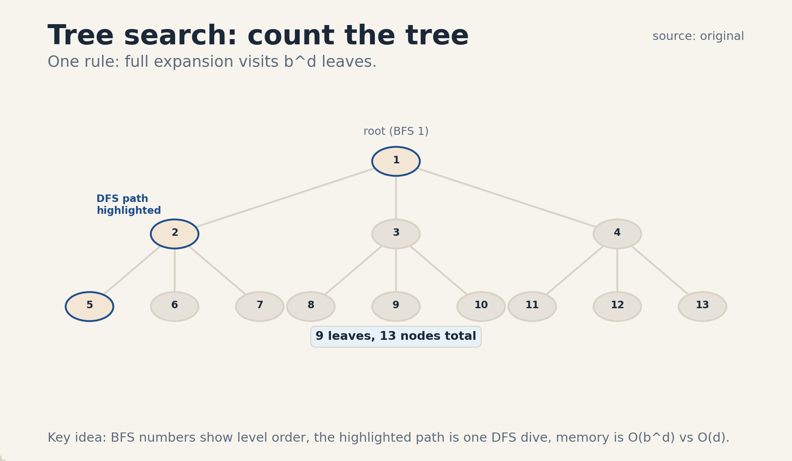
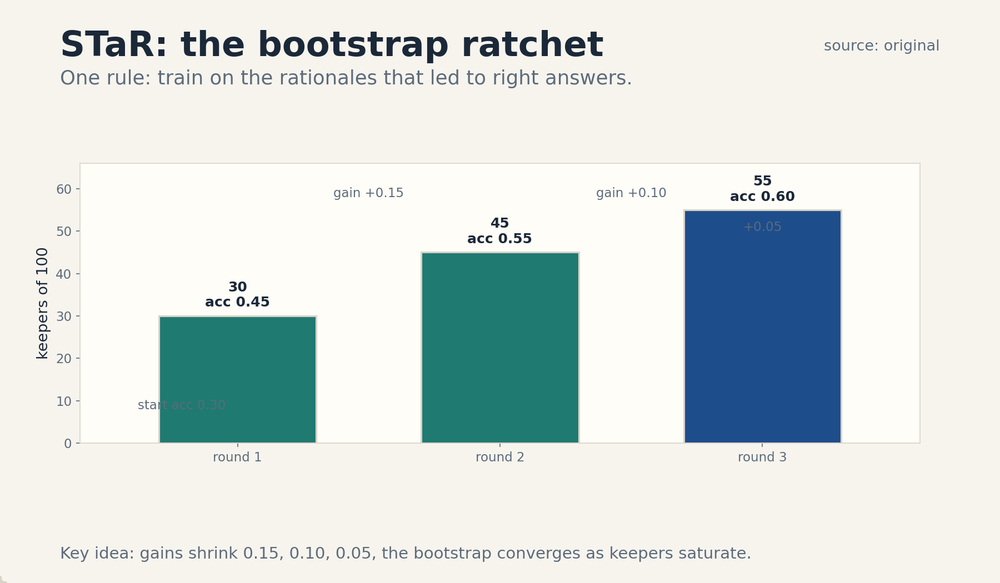
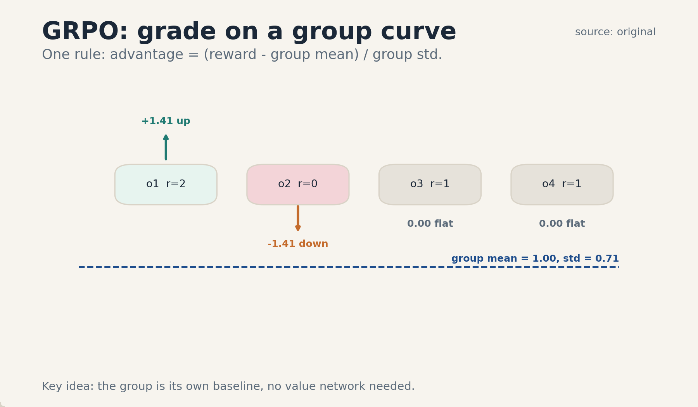

U03 · Planning, search, and train-time RL
U03 , Planning, search, and train-time RL
Course: Stanford CS329A, Autumn 2025. Official sessions 5 (Oct 6) and 6 (Oct 10). Baseline: 2026-10-07.
Claim class: mechanisms are taught from the requested inventory with SOURCE
ATTRIBUTION PENDING. Paper titles come from the verified official schedule
(see ../source_manifest.md). No paper contents were individually inspected
by this builder. Toy numbers are computed and traceable.
Unit objectives
After this unit the learner can: expand and count a search tree, compare adaptive branching with fixed branching, decompose a task and plan subtasks in parallel, assign multi-step credit on a toy, generate and filter synthetic traces, describe STaR and reasoning RL at mechanism level, compute GRPO advantages on a toy group, state the on-policy requirement, budget a search, and judge reward validity.
Dependencies
P09 (optimization), P17 (reinforcement learning), P20 (tools and agent
state). Local remediation is inside C05, C09, and C11. The shared bridges
live at ../shared/prerequisites/.
Four-way link used in this unit
Intuition: search spends compute to find better plans, RL spends experience to learn better policies. Equation: leaf count b^d, advantage (r_i - mean)/std in GRPO. Code: a tree expander plus a group-advantage update. Observation: deeper search helps to a point, then the budget or the reward model breaks first.
C01 tree search
1. Source mapping, scope, objectives, dependencies. Session 5, Multi-step Reasoning/Planning. Reading pointer: Zhou et al. 2023, Language Agent Tree Search (SOURCE ATTRIBUTION PENDING). Scope: expand action sequences as a tree of states, search it under a budget. Objective: count nodes and leaves for a toy tree and run BFS and DFS by hand. Dependencies: P09, P20.
2. Motivating question and tiny toy. Question: the agent can take 3 actions at each step for 2 steps. How many plans exist? Toy: b = 3, d = 2. Plans (leaves): 3^2 = 9. Nodes total: 1 + 3 + 9 = 13.
3. Plain-language mental model. A plan is a path down a tree. The root is now. Each branch is an action. The leaves are futures. Search walks the tree and remembers the best leaf it saw.
4. Variables, units, shapes, assumptions. Node: (state, path cost, children). b: branching factor. d: depth. Leaves of full expansion: b^d. Assumptions: actions are discrete and enumerable, the state is fully observed, a leaf score exists.
5. Justified derivation or mechanism. Full expansion visits every leaf once: b choices at each of d levels gives b^d leaves by the product rule. BFS explores level by level and finds the shallowest solution first. DFS dives deep and uses less memory. Neither is smart, the smarts are in the scoring and pruning (C02).
6. Computed numerical example using the same objects. b = 3, d = 3. Leaves: 27. Total nodes: 1 + 3 + 9 + 27 = 40. BFS order visits all of level 1 (3 nodes) before any of level 2. DFS visits one full root-to-leaf path (4 nodes) before backtracking. Memory: BFS holds the frontier, up to b^d nodes, DFS holds one path, d + 1 nodes.
7. Algorithm and original minimal implementation.
from collections import deque
def expand(state, actions):
return [(state, a) for a in actions(state)]
def bfs(root, actions, max_depth):
seen = []
queue = deque([(root, 0)])
while queue:
state, depth = queue.popleft()
seen.append((state, depth))
if depth < max_depth:
for child in expand(state, actions):
queue.append((child[0], depth + 1))
return seen
8. Correctness checks and expected output.
Check: with actions(state) = [“a”, “b”] and max_depth = 2, bfs visits
1 + 2 + 4 = 7 states. Check: depths in seen never decrease (BFS
level order).
9. Complexity, memory, statistical efficiency, stability, practical costs. Time O(b^d). Memory O(b^d) for BFS, O(d) for DFS. The exponential is the whole story: d = 10, b = 5 gives 9,765,625 leaves. Real search never expands fully, it prunes and scores (C02).
10. Nearest alternatives and precise selection boundaries. Linear chain (no branching): pick when the next action is forced. Sampling N chains: pick when branching is wide and scoring is cheap. Tree search: pick when intermediate states need scores and backtracking matters.
11. Failure case, broken assumption, counterexample. Break discrete actions: the action space is free text, so b is infinite and the tree never starts. Counterexample: a state space with cycles, naive expansion loops forever without visited-state tracking.
12. Research reading and falsifiable extension. Reading: Zhou et al. 2023 (SOURCE ATTRIBUTION PENDING). Extension: hypothesis: tree search beats N independent chains at matched node budget on planning tasks. Falsification: equal scores, which would mean the tree structure adds nothing over sampling.
13. Breadth recall, deep oral ladder, unfamiliar transfer. Recall: state the leaf formula and the BFS/DFS memory difference. Ladder: define the node, count the toy, justify the product rule, code BFS, state O(b^d), compare with sampling chains, debug the cycle failure, critique the discrete-action assumption, design the matched- budget test. Transfer: game trees in chess use the same counting.
14. Lab/exercises with answers separated.
E1.1: count leaves and total nodes for b = 4, d = 2. E1.2: state the
BFS and DFS memory use for b = 5, d = 6. E1.3: explain why cycles break
naive expansion. Answers: ../keys/u03_answers.md.
15. Visual units, provenance, accessibility, audit rows.
Figure ../visuals/u03_fig01.png: the b = 3, d = 2 tree: 13 nodes,
9 leaves marked, BFS visit order numbered on the first 6 nodes, one
root-to-leaf DFS path highlighted. Provenance: original, computed.
Alt text: tree diagram with 13 nodes and numbered visit order. Audit:
node and leaf counts match items 2 and 6.

C02 adaptive branching
1. Source mapping, scope, objectives, dependencies. Session 5. Reading pointer: Wider or Deeper? Scaling LLM Inference-Time Compute with Adaptive Branching Tree Search (SOURCE ATTRIBUTION PENDING). Scope: vary the branching factor by node instead of fixing it: branch wide where uncertain, deep where promising. Objective: compute the node savings of adaptive versus fixed branching on a toy. Dependencies: C01.
2. Motivating question and tiny toy. Question: fixed b = 4 at every node, or b = 6 at uncertain nodes and b = 2 at settled ones? Toy: depth 2. Root uncertain: 6 children. Of the 6, 2 show promise (2 children each), 4 are settled (1 child each). Leaves: 22 + 41 = 8. Fixed b = 4: 16 leaves. Same depth, half the leaves.
3. Plain-language mental model. Spend branches where the doubt is. A node that is already decided gets one child: keep going. A node with real uncertainty gets many children: look around. The tree grows where it is confused.
4. Variables, units, shapes, assumptions. b(n): branching factor at node n, set by an uncertainty or value signal. Budget: total node expansions. Assumptions: the signal that sets b(n) is informative, the budget is fixed.
5. Justified derivation or mechanism. Fixed branching wastes expansions on settled nodes. Adaptive branching moves those expansions to uncertain nodes, where extra samples change the decision more. The mechanism is resource allocation inside the tree: marginal value of one more child is higher at uncertain nodes.
6. Computed numerical example using the same objects. Item-2 toy: adaptive leaves 8, fixed leaves 16. If each leaf costs 1 unit, adaptive saves 8 units at the same depth. Reinvested: the saved 8 units fund depth 3 on the 2 promising paths: 2 paths * 2 children = 4 new leaves at depth 3. The adaptive tree reaches deeper on the paths that matter.
7. Algorithm and original minimal implementation.
def adaptive_branch(node, uncertainty):
if uncertainty > 0.7:
return 6
if uncertainty > 0.3:
return 3
return 1
8. Correctness checks and expected output. Check: adaptive_branch(n, 0.8) = 6, adaptive_branch(n, 0.5) = 3. adaptive_branch(n, 0.1) = 1. Check: thresholds are stated constants, not tuned secrets.
9. Complexity, memory, statistical efficiency, stability, practical costs. Same worst case as fixed branching, the win is average-case node use. Cost: computing the uncertainty signal per node. Risk: a bad signal starves the good paths.
10. Nearest alternatives and precise selection boundaries. Fixed branching: pick when no uncertainty signal exists. UCT/MCTS: pick when value estimates improve with visits. Adaptive branching: pick when a cheap uncertainty signal exists per node.
11. Failure case, broken assumption, counterexample. Break signal quality: the uncertainty signal is noise. Adaptive branching then allocates randomly and underperforms fixed branching while costing more. Counterexample: all nodes score uncertainty 0.5, so the tree is fixed b = 3 with extra signal compute wasted.
12. Research reading and falsifiable extension. Reading: the adaptive branching paper (SOURCE ATTRIBUTION PENDING). Extension: hypothesis: adaptive beats fixed at matched node budget. Falsification: equal or worse scores, which would implicate the signal quality.
13. Breadth recall, deep oral ladder, unfamiliar transfer. Recall: state the rule “branch where uncertain” and the toy savings. Ladder: define b(n), run the toy, justify marginal value, code the rule, state signal cost, compare with UCT, debug the noisy-signal failure, critique the signal assumption, design the matched-budget test. Transfer: adaptive mesh refinement in simulation uses the same idea.
14. Lab/exercises with answers separated.
E2.1: compute leaves for: root 4 children, 1 promising (3 children),
3 settled (1 each). E2.2: compare with fixed b = 3, d = 2. E2.3:
explain the noisy-signal failure. Answers: ../keys/u03_answers.md.
15. Visual units, provenance, accessibility, audit rows.
Table plate in the lesson (item 2/6: node class, children, leaves).
No separate PNG. Logged in ../visual_audit.md.
C03 decomposition
1. Source mapping, scope, objectives, dependencies. Session 5. Reading pointer: Prasad et al. 2024, ADaPT: As-Needed Decomposition and Planning with Language Models (SOURCE ATTRIBUTION PENDING). Scope: split a task into subtasks, solve separately, combine. Objective: decompose a toy task and show the interface between parts. Dependencies: C01, P20.
2. Motivating question and tiny toy. Question: “plan a trip” is too big for one prompt. What are the pieces? Toy: task “weekend trip”. Subtasks: transport, lodging, food. Interfaces: dates flow to all three, budget splits across them, the combiner checks total cost <= budget.
3. Plain-language mental model. Cut the elephant into steaks. Each steak cooks separately. The recipe says how the steaks combine into a meal. The interfaces are the recipe.
4. Variables, units, shapes, assumptions. Decomposition: task T -> [T1..Tk] plus a combiner C. Interface: the shared variables each subtask reads and writes. Assumptions: subtasks are solvable independently given the interface, the combiner’s check is correct.
5. Justified derivation or mechanism. Decomposition turns one b^d search into k smaller searches: the product of small trees beats one big tree when subtasks decouple. ADaPT’s “as-needed” point: decompose only when the direct attempt fails, so easy tasks pay no decomposition cost. The mechanism is conditional complexity: pay for structure only where needed.
6. Computed numerical example using the same objects. Toy: direct attempt on the trip task: b = 5, d = 4, leaves 625. Decomposed: 3 subtasks, each b = 3, d = 2, leaves 9 each, total 27, plus combiner cost 3. Total 30 versus 625. The saving is real when the subtasks truly decouple, the interface cost is the combiner.
7. Algorithm and original minimal implementation.
def adapt(task, max_depth=2):
result = attempt(task)
if result["ok"] or max_depth == 0:
return result
parts = decompose(task)
sub = [adapt(p, max_depth - 1) for p in parts]
return combine(sub)
def attempt(task):
raise NotImplementedError("direct solver goes here")
def decompose(task):
raise NotImplementedError("decomposer goes here")
def combine(subresults):
raise NotImplementedError("combiner goes here")
8. Correctness checks and expected output. Check: a task that succeeds directly never calls decompose. Check: the recursion bottoms out at max_depth and returns the failed attempt instead of looping.
9. Complexity, memory, statistical efficiency, stability, practical costs. Best case: one direct attempt. Worst case: full recursive decomposition. The interface is the risk: wrong shared variables make subtasks solve the wrong problem well.
10. Nearest alternatives and precise selection boundaries. Always decompose: pick when tasks are uniformly hard. Never decompose: pick when tasks are uniformly easy. As-needed: pick when difficulty varies and the direct attempt is cheap.
11. Failure case, broken assumption, counterexample. Break subtask independence: lodging choice changes transport cost, but the interface fixed transport first. Each subtask is optimal alone. the combination is bad. Counterexample: decompose a joke into setup and punchline written separately, the combination is not funny.
12. Research reading and falsifiable extension. Reading: Prasad et al. 2024 (SOURCE ATTRIBUTION PENDING). Extension: hypothesis: as-needed decomposition beats always-decompose on mixed difficulty sets at matched cost. Falsification: equal cost-adjusted scores, which would mean the direct attempts waste more than they save.
13. Breadth recall, deep oral ladder, unfamiliar transfer. Recall: state the as-needed rule and the interface role. Ladder: define the split, run the toy numbers, justify conditional complexity, code the recursion, state interface risk, compare with always- decompose, debug the coupled-subtask failure, critique independence, design the mixed-difficulty test. Transfer: divide and conquer in algorithms is the same shape.
14. Lab/exercises with answers separated.
E3.1: compute the leaf saving for b = 4, d = 3 versus two subtasks of
b = 2, d = 2. E3.2: name the interface variables for “write a report”.
E3.3: explain the joke counterexample. Answers:
../keys/u03_answers.md.
15. Visual units, provenance, accessibility, audit rows.
Table plate in the lesson (item 6: approach, leaves, cost). No
separate PNG. Logged in ../visual_audit.md.
C04 parallel planning/execution
1. Source mapping, scope, objectives, dependencies. Session 5. Reading pointer: SPRINT: Enabling Interleaved Planning and Parallelized Execution in Reasoning Models (SOURCE ATTRIBUTION PENDING). Scope: plan subtasks, run independent ones at the same time, interleave planning with execution. Objective: compute the wall-clock saving of parallel over serial execution on a toy. Dependencies: C03, P16 is not bridged, the parallelism here is logical, taught locally.
2. Motivating question and tiny toy. Question: three subtasks take 4, 6, and 5 seconds. Serial: 15 seconds. Parallel: 6 seconds (the longest). What does the planner need to know to allow this? Toy: dependency graph: A and B independent, C needs A. Schedule: run A and B together (6s), then C (5s). Total 11s versus 15s serial.
3. Plain-language mental model. Independent work runs side by side. Dependent work waits its turn. The planner’s job is to know which is which. Interleaving means: start executing A while still planning C.
4. Variables, units, shapes, assumptions. Subtasks with durations and a dependency DAG. Serial time: sum. Parallel time: longest path (critical path). Assumptions: dependencies are known, parallel workers exist, subtask durations are predictable.
5. Justified derivation or mechanism. The critical path sets the floor: no schedule beats the longest dependency chain. Parallelism removes waiting between independent tasks but never shortens the chain. Interleaved planning hides planning latency behind execution: while A runs, plan C.
6. Computed numerical example using the same objects. Item-2 toy: serial 15s. Parallel with the DAG: max over paths: A->C = 4 + 5 = 9, B = 6. Critical path 9s. Wait: A and B run together, taking max(4, 6) = 6s, then C takes 5s: total 11s. The critical path A->C is 9s but B forces 6s in the first wave, so 11s. Check: no schedule beats 9s, 11s is achievable, serial is 15s.
7. Algorithm and original minimal implementation.
def parallel_time(durations, deps):
done = {}
order = topo_sort(deps)
for task in order:
start = max([done[d] for d in deps[task]], default=0)
done[task] = start + durations[task]
return max(done.values())
def topo_sort(deps):
raise NotImplementedError("topological order goes here")
8. Correctness checks and expected output. Check: durations {A: 4, B: 6, C: 5}, deps {A: [], B: [], C: [“A”]} gives 11. Check: no dependencies gives max(durations).
9. Complexity, memory, statistical efficiency, stability, practical costs. Scheduling is cheap, the cost is coordination: parallel subtasks need isolated state so they do not clobber each other. Stability: a wrong dependency edge causes a race.
10. Nearest alternatives and precise selection boundaries. Serial: pick when subtasks share mutable state. Parallel: pick when subtasks are independent and workers exist. Interleaved: pick when planning is slow and execution can start early.
11. Failure case, broken assumption, counterexample. Break dependency knowledge: C secretly needs B’s output. Parallel A+B then C uses a stale B result. Counterexample: two subtasks writing the same file, parallel execution corrupts it.
12. Research reading and falsifiable extension. Reading: the SPRINT paper (SOURCE ATTRIBUTION PENDING). Extension: hypothesis: interleaved planning cuts wall-clock time versus plan-then-execute at equal task success. Falsification: equal times, which would mean planning was never the bottleneck.
13. Breadth recall, deep oral ladder, unfamiliar transfer. Recall: define the critical path and the 11s toy. Ladder: define the DAG, run the toy, justify the critical-path floor, code the schedule, state coordination cost, compare with serial, debug the hidden- dependency failure, critique duration predictability, design the wall-clock test. Transfer: project management PERT charts use the same math.
14. Lab/exercises with answers separated.
E4.1: compute serial, parallel, and critical-path times for durations
{2, 3, 4} with C depending on A and B. E4.2: explain the 11 versus 9
gap in the lesson toy. E4.3: name the shared-file failure class.
Answers: ../keys/u03_answers.md.
15. Visual units, provenance, accessibility, audit rows.
Table plate in the lesson (item 6: schedule, waves, totals). No
separate PNG. Logged in ../visual_audit.md.
C05 multi-step credit
1. Source mapping, scope, objectives, dependencies. Sessions 5-6. Scope: which step of a trajectory deserves the reward: credit assignment over multiple steps. Objective: compute per-step credit on a three-step toy with an ablation. Dependencies: P17. Local remediation: value, Q, and advantage are defined here from scratch.
2. Motivating question and tiny toy. Question: a three-step trajectory earns reward 1 at the end. Which step caused it? Toy: steps [s1, s2, s3]. Ablation results: remove s1 -> reward 0, remove s2 -> reward 1, remove s3 -> reward 0. Credit: s1 and s3 are necessary, s2 is not.
3. Plain-language mental model. Credit is blame in reverse. To find who deserves it, remove each suspect and watch the outcome. The step whose removal breaks success owns the credit.
4. Variables, units, shapes, assumptions. Trajectory tau = (s_0, a_0, …, s_T). Return R(tau). Value V(s): expected return from s. Q(s, a): expected return after action a. Advantage A(s, a) = Q(s, a) - V(s). Assumptions: the environment is fixed during ablations, removal means a neutral replacement, not deletion.
5. Justified derivation or mechanism. The policy gradient needs to know which actions to reinforce. The advantage answers: actions better than average get positive weight. Ablation is the gold standard for credit: it measures the causal effect of the step. Value estimates are the cheap approximation used at scale.
6. Computed numerical example using the same objects. Toy with numbers: baseline success rate 0.4. With s1 forced good: 0.9. With s2 forced good: 0.45. With s3 forced good: 0.85. Marginal credit: s1: 0.5, s2: 0.05, s3: 0.45. Normalized shares: 0.5, 0.05, 0.45 over total 1.0. The update should weight s1 and s3, nearly ignore s2.
7. Algorithm and original minimal implementation.
def ablation_credit(trajectory, reward_fn, baseline):
credits = []
for i in range(len(trajectory)):
ablated = trajectory[:i] + trajectory[i + 1:]
credits.append(reward_fn(ablated) - baseline)
return credits
8. Correctness checks and expected output. Check: on the item-2 toy with a scripted reward_fn, credits are negative for s1 and s3 (removal hurts), near zero for s2. Check: empty trajectory returns [].
9. Complexity, memory, statistical efficiency, stability, practical costs. O(T) full-trajectory evaluations per credit vector. At scale this is too expensive, which is why value models approximate it. The approximation is the source of most credit bugs.
10. Nearest alternatives and precise selection boundaries. Full-trajectory reward: pick when T is small. Ablation: pick when correctness matters more than cost. Learned value model: pick at scale, with ablations as the spot check.
11. Failure case, broken assumption, counterexample. Break the neutral-replacement assumption: removing s2 shifts the positions of s3’s inputs, so the ablation measures position shift, not s2’s credit. Counterexample: two redundant steps, removing either alone changes nothing, removing both breaks everything. Marginal credit says neither matters, both matter.
12. Research reading and falsifiable extension. Reading: credit-assignment literature via P17 (SOURCE ATTRIBUTION PENDING for course-specific treatment). Extension: hypothesis: advantage-weighted updates beat uniform-trajectory updates on multi-step tasks. Falsification: equal performance, which would mean the credit signal adds nothing over the trajectory signal.
13. Breadth recall, deep oral ladder, unfamiliar transfer. Recall: define advantage and the ablation rule. Ladder: define the trajectory, run the toy, justify the causal reading, code the ablation, state O(T) cost, compare with value models, debug the redundant-steps failure, critique the replacement assumption, design the advantage ablation test. Transfer: a relay team: remove each runner and time the team.
14. Lab/exercises with answers separated.
E5.1: compute normalized credit shares for marginal credits
[0.5, 0.05, 0.45]. E5.2: explain the redundant-steps counterexample.
E5.3: state when ablation is affordable. Answers:
../keys/u03_answers.md.
15. Visual units, provenance, accessibility, audit rows.
Table plate in the lesson (item 6: step, forced-good rate, marginal
credit, share). No separate PNG. Logged in ../visual_audit.md.
C06 synthetic traces
1. Source mapping, scope, objectives, dependencies. Session 6, Train Time Scaling. Reading pointer: SWiRL: Synthetic Data Generation and Multi-Step RL for Reasoning and Tool Use (SOURCE ATTRIBUTION PENDING). Scope: generate training trajectories synthetically, filter them, train on the survivors. Objective: run a toy generate-filter-train count. Dependencies: C05, P10.
2. Motivating question and tiny toy. Question: human trajectories are expensive. Can the model write its own training data? Toy: generate 1000 traces. Filter: keep traces where the final answer is right and every tool call succeeded. Kept: 300. Train on the 300.
3. Plain-language mental model. The model dreams up attempts. A filter keeps the good dreams. Training on good dreams makes more good dreams. The filter is the teacher, the generator is the student who also writes the textbook.
4. Variables, units, shapes, assumptions. Generation policy pi_gen, filter F, kept set K, training set = K. Assumptions: the filter’s judgment is right, the kept traces cover the task distribution, the generator is diverse enough to produce keepers.
5. Justified derivation or mechanism. This is rejection sampling as data curation: sample from pi_gen, keep by F, train by maximum likelihood on K. It works when the filter is stricter than the generator is good: the kept set is better than average, so imitation raises the average. It fails when the filter is loose or the generator only dreams one dream (mode collapse).
6. Computed numerical example using the same objects. Toy: 1000 traces, base success rate 0.2. Filter keeps successes: 200 kept. Train: new success rate 0.35 (imitation of successes plus generalization). Round 2: generate 1000 at 0.35, keep 350, train to 0.45. The ratchet: 0.20 -> 0.35 -> 0.45. Each round’s filter output is the next round’s training input.
7. Algorithm and original minimal implementation.
def synthetic_round(generate, keep_filter, n):
kept = []
for _ in range(n):
trace = generate()
if keep_filter(trace):
kept.append(trace)
return kept
8. Correctness checks and expected output. Check: with a scripted generate producing 20 percent successes and a correctness filter, kept/n prints about 0.2. Check: an empty filter returns [].
9. Complexity, memory, statistical efficiency, stability, practical costs. Cost: n generations per round plus filtering. The filter is usually cheap (a verifier or tests). Stability: train too long on K and the policy collapses to K’s quirks, mix in fresh data.
10. Nearest alternatives and precise selection boundaries. Human demonstrations: pick when quality beats cost. Synthetic traces: pick when the filter is trustworthy and scale matters. RL from scratch: pick when no good traces exist to imitate.
11. Failure case, broken assumption, counterexample. Break filter trust: the filter checks the final answer only, and the generator learns to produce right answers with broken reasoning. The ratchet then amplifies broken reasoning. Counterexample: mode collapse: all 1000 traces are the same template, the kept set teaches one trick.
12. Research reading and falsifiable extension. Reading: SWiRL (SOURCE ATTRIBUTION PENDING). Extension: hypothesis: filtered synthetic data beats unfiltered at matched trace count. Falsification: equal performance, which would mean the filter adds no signal.
13. Breadth recall, deep oral ladder, unfamiliar transfer. Recall: state the generate-filter-train loop and the ratchet numbers. Ladder: define the triple, run the toy, justify rejection sampling, code the round, state generation cost, compare with human demos, debug the broken-reasoning failure, critique filter trust, design the filtered-versus-unfiltered test. Transfer: selective breeding is the same loop.
14. Lab/exercises with answers separated.
E6.1: compute round-3 keep count if the rate goes 0.45 -> 0.52.
E6.2: explain the ratchet in two sentences. E6.3: name the mode-
collapse failure. Answers: ../keys/u03_answers.md.
15. Visual units, provenance, accessibility, audit rows.
Table plate in the lesson (item 6: round, rate, kept, new rate). No
separate PNG. Logged in ../visual_audit.md.
C07 STaR
1. Source mapping, scope, objectives, dependencies. Session 6. Reading pointer: Zelikman et al. 2022, STaR: Bootstrapping Reasoning With Reasoning (SOURCE ATTRIBUTION PENDING). Scope: generate rationales, keep the ones that lead to right answers, fine-tune on them, repeat. Objective: run the STaR loop on a toy with counts. Dependencies: C06, P10.
2. Motivating question and tiny toy. Question: the model cannot explain its answers, but it sometimes gets them right. Can the right answers teach the explanations? Toy: 100 questions. Model answers 30 right. For each right answer, keep the rationale it generated. Fine-tune on the 30 (question, rationale, answer) triples. Next round: 45 right.
3. Plain-language mental model. Keep the scratch work that led to right answers. Study it. The model teaches itself to show work that works. Each round’s good scratch becomes the next round’s textbook.
4. Variables, units, shapes, assumptions. Rationales R for questions Q with answers A. Filter: keep (q, r, a) iff a is correct. Update: supervised fine-tuning on kept triples. Assumptions: correct answers imply usable rationales often enough, the rationale actually supports the answer.
5. Justified derivation or mechanism. STaR is synthetic traces (C06) specialized to rationales: the filter is answer correctness, the artifact is the reasoning chain. Bootstrapping works when the initial policy is good enough to produce some keepers: the kept set is above-average, so imitation raises the average. The rationalization variant (hint the answer, then generate the rationale) fills gaps where the model never succeeds unaided.
6. Computed numerical example using the same objects. Toy: round 1: 100 questions, 30 keepers, train, accuracy 0.30 -> 0.45. Round 2: 45 keepers of 100, train, 0.45 -> 0.55. Round 3: 55 keepers, 0.55 -> 0.60. Gains shrink: 0.15, 0.10, 0.05. The bootstrap converges as the keeper pool saturates.
7. Algorithm and original minimal implementation.
def star_round(questions, model, check):
kept = []
for q in questions:
rationale, answer = model(q)
if check(q, answer):
kept.append((q, rationale, answer))
finetune(model, kept)
return len(kept)
8. Correctness checks and expected output. Check: with a scripted model at 30 percent accuracy, star_round returns about 30 keepers of 100. Check: finetune is called with only the kept triples.
9. Complexity, memory, statistical efficiency, stability, practical costs. Cost: one generation per question per round plus fine-tuning. The bottleneck is the initial keeper rate: near zero keepers means no bootstrap. Rationalization (hinting) is the standard fix.
10. Nearest alternatives and precise selection boundaries. Plain supervised fine-tuning: pick when human rationales exist. STaR: pick when only answers are labeled and the model sometimes succeeds. RL on answers: pick when rationales are not needed at test time.
11. Failure case, broken assumption, counterexample. Break the rationale-answer link: the model guesses right with nonsense rationales. STaR then trains the model to write confident nonsense. Counterexample: a hinted rationale that argues for the hint regardless of truth, the loop teaches sycophancy to hints.
12. Research reading and falsifiable extension. Reading: Zelikman et al. 2022 (SOURCE ATTRIBUTION PENDING). Extension: hypothesis: STaR with rationalization beats STaR without it on hard question sets. Falsification: equal gains, which would mean hinting adds no keepers.
13. Breadth recall, deep oral ladder, unfamiliar transfer. Recall: state the loop and the shrinking-gain numbers. Ladder: define the triple, run the toy, justify the bootstrap, code the round, state the keeper-rate bottleneck, compare with plain SFT, debug the nonsense-rationale failure, critique the answer-implies-rationale assumption, design the rationalization test. Transfer: a student who only studies solved problems they got right.
14. Lab/exercises with answers separated.
E7.1: compute round-4 accuracy if the gain halves again. E7.2:
explain the bootstrap condition in two sentences. E7.3: name the
rationalization fix. Answers: ../keys/u03_answers.md.
15. Visual units, provenance, accessibility, audit rows.
Figure ../visuals/u03_fig03.png: the STaR ratchet: rounds 1-3 as
bars of keeper counts (30, 45, 55) with accuracy labels (0.30, 0.45,
0.55, 0.60) and shrinking gain arrows. Provenance: original, values
from item 6. Alt text: three bars rising with shrinking gains.
Audit: counts match item 6.

C08 reasoning RL
1. Source mapping, scope, objectives, dependencies. Session 6. Reading pointer: DeepSeekMath (SOURCE ATTRIBUTION PENDING). Scope: reinforcement learning that rewards reasoning traces, usually with verifiable rewards. Objective: write the reasoning-RL loop and name its reward. Dependencies: C05, C06, P17.
2. Motivating question and tiny toy. Question: STaR imitates good traces. What if the model must discover them? Toy: reward = 1 if the final answer is right, 0 otherwise. Policy samples 4 traces per question, gets rewards [1, 0, 0, 1], and updates toward the two winners.
3. Plain-language mental model. Let the model try, and pay for results. The reward is a vending machine: right answer in, gradient out. Discovery beats imitation when the good traces are ones nobody wrote down.
4. Variables, units, shapes, assumptions. Reward: verifiable outcome (answer check, test pass). Group of G samples per prompt. Update: policy gradient with group baseline. Assumptions: the reward is verifiable, not learned, the group is big enough for a stable baseline.
5. Justified derivation or mechanism. With verifiable rewards, the RL loop needs no human labels and no learned reward model: the world grades. The group baseline (C09’s GRPO core) cuts variance without a value network. The mechanism discovers traces outside the imitation set, which is the point where STaR’s keeper pool saturates.
6. Computed numerical example using the same objects. Toy: G = 4, rewards [1, 0, 0, 1]. Mean = 0.5. Advantages: [0.5, -0.5, -0.5, 0.5]. The update raises the two winning traces and lowers the two losers, each weighted 0.5. Contrast with STaR: STaR would train on the two winners only, RL also pushes away from the losers.
7. Algorithm and original minimal implementation.
def reasoning_rl_step(rewards):
baseline = sum(rewards) / len(rewards)
return [r - baseline for r in rewards]
8. Correctness checks and expected output. Check: reasoning_rl_step([1, 0, 0, 1]) = [0.5, -0.5, -0.5, 0.5]. Check: advantages sum to 0.
9. Complexity, memory, statistical efficiency, stability, practical costs. Cost: G samples per prompt plus one update. Variance: binary rewards on hard prompts give all-zero groups that teach nothing, prompt selection (drop solved and unsolved prompts) is the standard fix.
10. Nearest alternatives and precise selection boundaries. STaR: pick when imitation of keepers suffices. Reasoning RL: pick when discovery beyond the keeper set is needed. RLHF: pick when the reward needs human judgment.
11. Failure case, broken assumption, counterexample. Break verifiability: the reward is a learned model that the policy then games (U02 C11). The loop optimizes the judge, not the task. Counterexample: all-zero groups on too-hard prompts: the update is zero and training stalls.
12. Research reading and falsifiable extension. Reading: DeepSeekMath (SOURCE ATTRIBUTION PENDING). Extension: hypothesis: reasoning RL beats STaR on problems where the initial keeper rate is near zero. Falsification: equal scores, which would mean discovery adds nothing over imitation there.
13. Breadth recall, deep oral ladder, unfamiliar transfer. Recall: define the verifiable reward and the group update. Ladder: define the group, run the toy, justify the baseline, code the step, state the all-zero-group cost, compare with STaR, debug the gamed- reward failure, critique verifiability, design the low-keeper test. Transfer: evolution with a fitness function is the same loop without gradients.
14. Lab/exercises with answers separated.
E8.1: compute advantages for rewards [1, 1, 0, 0, 0]. E8.2: explain
the STaR contrast in two sentences. E8.3: name the all-zero-group fix.
Answers: ../keys/u03_answers.md.
15. Visual units, provenance, accessibility, audit rows.
Table plate in the lesson (item 6: trace, reward, advantage). No
separate PNG. Logged in ../visual_audit.md.
C09 DAPO/GRPO reading
1. Source mapping, scope, objectives, dependencies. Session 6. Reading pointer: DAPO: An Open-Source LLM Reinforcement Learning System at Scale (SOURCE ATTRIBUTION PENDING). GRPO (group relative policy optimization) is the algorithm family DAPO builds on. This is a reading concept: the mechanism is taught, the paper contents are not claimed. Objective: compute GRPO advantages on a toy group and state what DAPO systematizes. Dependencies: C08, P17. Local remediation: the GRPO objective is derived here from scratch.
2. Motivating question and tiny toy. Question: PPO needs a value network. What if the baseline comes from the group itself? Toy: G = 4 responses to one prompt, rewards [2, 0, 1, 1]. Mean = 1.0, std = 0.7071. Advantages: [(2-1)/0.7071, (0-1)/0.7071, 0, 0] = [1.4142, -1.4142, 0, 0].
3. Plain-language mental model. Grade on a curve within each group. The best response in the group gets pushed up, the worst gets pushed down, the middle stays. No separate value network: the group is its own baseline.
4. Variables, units, shapes, assumptions. Group: G responses {o_1..o_G} to one prompt. Reward r_i per response. Advantage A_i = (r_i - mean(r)) / std(r). Objective: policy gradient with A_i plus a KL penalty to a reference policy. Assumptions: G is large enough that mean and std are stable, rewards are comparable within the group.
5. Justified derivation or mechanism. The group baseline removes the prompt’s difficulty level: a hard prompt where all rewards are low still yields a useful ranking. Dividing by std normalizes the update scale across prompts. The KL term keeps the policy near the reference so the group stays on-distribution. DAPO’s systems contribution (per the schedule listing): this loop at scale, the algorithm core is the group-relative advantage.
6. Computed numerical example using the same objects. Item-2 toy: mean = (2+0+1+1)/4 = 1.0. Variance = ((1)^2 + (-1)^2 + 0 + 0)/4 = 0.5. std = sqrt(0.5) = 0.7071. Advantages: [1.4142, -1.4142, 0.0, 0.0]. Check: they sum to 0. The update pushes response 1 up hard, response 2 down hard, and ignores the tied middle.
7. Algorithm and original minimal implementation.
import math
def grpo_advantages(rewards):
g = len(rewards)
mean = sum(rewards) / g
var = sum((r - mean) ** 2 for r in rewards) / g
std = math.sqrt(var) if var > 0 else 1.0
return [(r - mean) / std for r in rewards]
8. Correctness checks and expected output. Check: grpo_advantages([2, 0, 1, 1]) prints about [1.4142, -1.4142, 0.0, 0.0]. Check: all-equal rewards give all-zero advantages (std guard returns 1.0, numerators 0).
9. Complexity, memory, statistical efficiency, stability, practical costs. No value network: less memory and compute than PPO. Cost: G samples per prompt. Stability: small G makes std noisy, G = 4 is the toy, not a recommendation. The std guard prevents division by zero.
10. Nearest alternatives and precise selection boundaries. PPO with a learned value model: pick when groups are small or rewards are sparse across prompts. REINFORCE with a moving baseline: pick when simplicity beats stability. GRPO: pick when G samples per prompt are affordable and rewards are verifiable.
11. Failure case, broken assumption, counterexample. Break within-group comparability: two responses solve different interpretations of an ambiguous prompt. The ranking then punishes a valid alternative. Counterexample: all rewards equal (all right or all wrong): advantages are zero and the group teaches nothing.
12. Research reading and falsifiable extension. Reading: DAPO (SOURCE ATTRIBUTION PENDING). Extension: hypothesis: GRPO matches PPO on verifiable-reward tasks with less compute. Falsification: a gap that persists after tuning G, which would mean the value network carries real signal.
13. Breadth recall, deep oral ladder, unfamiliar transfer. Recall: write the advantage formula and the std guard. Ladder: define the group, run the toy, justify the group baseline, code the function, state the small-G cost, compare with PPO, debug the ambiguous-prompt failure, critique comparability, design the GRPO-versus-PPO test. Transfer: grading on a curve in a classroom.
14. Lab/exercises with answers separated.
E9.1: compute advantages for rewards [3, 1, 1, 3]. E9.2: explain why
the group baseline removes prompt difficulty. E9.3: state the std
guard and when it triggers. Answers: ../keys/u03_answers.md.
15. Visual units, provenance, accessibility, audit rows.
Figure ../visuals/u03_fig02.png: the item-2 group as four response
chips with rewards [2, 0, 1, 1], a mean line at 1.0, and advantage
arrows (+1.41 up, -1.41 down, two flat). Provenance: original,
computed. Alt text: four chips with reward labels and advantage
arrows around a mean line. Audit: numbers match item 6.

C10 on-policyness
1. Source mapping, scope, objectives, dependencies. Session 6. Scope: the requirement that update data come from the current policy, and what breaks when it does not. Objective: show a toy where stale data biases the update. Dependencies: C08, C09, P17.
2. Motivating question and tiny toy. Question: yesterday’s policy wrote the traces, today’s policy trains on them. What goes wrong? Toy: old policy put P(A) = 0.8 on action A. New policy puts P(A) = 0.2. Traces from the old policy show A succeeding. The update raises P(A) toward the old policy’s behavior, undoing the new policy’s change.
3. Plain-language mental model. Train on your own recent games, not on last season’s tapes. Stale data teaches the current policy to be the old policy. The fresher the data, the truer the gradient.
4. Variables, units, shapes, assumptions. Behavior policy pi_old (data source), target policy pi_new (updated). On-policy: pi_old = pi_new. Off-policy needs correction, usually importance weights pi_new/pi_old. Assumptions: the policies overlap enough that the weights are finite.
5. Justified derivation or mechanism. The policy gradient is an expectation under the current policy. Data from an old policy estimates the wrong expectation. Importance weighting reweights each sample by pi_new/pi_old, which is unbiased but high-variance when the policies differ. Clipping (PPO-style) or fresh data (on-policy) controls the variance.
6. Computed numerical example using the same objects. Toy: one action A. pi_old(A) = 0.8, pi_new(A) = 0.2. Reward 1 when A is taken. Uncorrected update on old data: gradient pushes P(A) up. Importance weight for an A sample: 0.2/0.8 = 0.25. Corrected gradient is 0.25 times the naive one. The correction shrinks the stale push by a factor of 4. If pi_new(A) were 0.0, the weight would be 0/0.8 = 0: stale successes of an abandoned action teach nothing.
7. Algorithm and original minimal implementation.
def importance_weight(p_new, p_old):
if p_old == 0:
return 0.0
return p_new / p_old
8. Correctness checks and expected output. Check: importance_weight(0.2, 0.8) = 0.25. Check: importance_weight(0.0, 0.8) = 0.0. Check: on-policy (equal inputs) returns 1.0.
9. Complexity, memory, statistical efficiency, stability, practical costs. Weights are cheap, variance is the cost. The practical fix in reasoning RL is procedural: regenerate data every few updates so staleness stays small, instead of correcting large staleness with noisy weights.
10. Nearest alternatives and precise selection boundaries. Pure on-policy (fresh data each update): pick when sampling is cheap. Importance-weighted off-policy: pick when data is expensive and policies drift slowly. Replay buffers: pick when the task needs the sample efficiency despite the bias risk.
11. Failure case, broken assumption, counterexample. Break overlap: pi_new assigns 0 to an action pi_old took often. The weight is 0 and those samples vanish, worse, the reverse (pi_old = 0, pi_new > 0) divides by zero. Counterexample: a policy that changed its tokenizer: old token sequences are impossible under the new policy and every weight is 0.
12. Research reading and falsifiable extension. Reading: on-policy discussions in the RL-at-scale literature (SOURCE ATTRIBUTION PENDING for course-specific treatment). Extension: hypothesis: regenerating data every update beats reusing data for 4 updates at matched sample count. Falsification: equal final performance, which would mean staleness does not bite at that drift rate.
13. Breadth recall, deep oral ladder, unfamiliar transfer. Recall: define on-policy and the importance weight. Ladder: define the two policies, run the toy, justify the expectation argument, code the weight, state the variance cost, compare with fresh data, debug the zero-overlap failure, critique the overlap assumption, design the regeneration-frequency test. Transfer: coaching from your own recent matches versus last year’s videos.
14. Lab/exercises with answers separated.
E10.1: compute the corrected gradient scale for pi_old = 0.9,
pi_new = 0.3. E10.2: explain the 0/0.8 = 0 case in words. E10.3: state
the procedural fix. Answers: ../keys/u03_answers.md.
15. Visual units, provenance, accessibility, audit rows.
Table plate in the lesson (item 6: policy, weight, effect). No
separate PNG. Logged in ../visual_audit.md.
C11 budget
1. Source mapping, scope, objectives, dependencies. Sessions 5-6. Scope: the compute budget as a first-class constraint on search and RL: nodes expanded, samples drawn, updates run. Objective: write a budget ledger for a toy search and stop it at the cap. Dependencies: C01, C08. Local remediation: budgets as hard constraints are defined here from scratch.
2. Motivating question and tiny toy. Question: the search may expand 100 nodes. How does it stop at 100? Toy: b = 3, d = 4. Full expansion needs 121 nodes. The budget allows 100. The search expands 100 nodes, scores the best leaf seen, and stops. It never sees the remaining 21 nodes.
3. Plain-language mental model. A budget is a fuel gauge. Every expansion burns fuel. The search flies until the gauge hits zero, then lands on the best leaf it saw. Running out of fuel is normal, the plan accounts for it.
4. Variables, units, shapes, assumptions. Budget B in node expansions (or samples, or dollars, name the unit). Ledger: (spent, remaining) updated per expansion. Stop rule: spent >= B. Assumptions: per-expansion cost is uniform, the best-so-far leaf is tracked.
5. Justified derivation or mechanism. There is no derivation, the mechanism is a ledger. The design question is allocation under the cap: which nodes deserve the fuel. That is C02 (adaptive branching) and U01 C05 (compute allocation) applied inside the search. The budget turns “search more” from a wish into a tradeoff.
6. Computed numerical example using the same objects. Toy: B = 100 node expansions, b = 3. Level costs: 1 + 3 + 9 + 27 = 40 for depth 2. Depth 3 needs 40 + 81 = 121 > 100. So the search completes depth 2 (40 nodes) and expands 60 of the 81 depth-3 nodes. Best leaf seen: max over the 60 expanded. The 21 unexpanded nodes are the opportunity cost, stated, not hidden.
7. Algorithm and original minimal implementation.
def budgeted_search(root, expand_fn, score_fn, budget):
spent = 0
best = (None, float("-inf"))
frontier = [root]
while frontier and spent < budget:
node = frontier.pop(0)
spent += 1
s = score_fn(node)
if s > best[1]:
best = (node, s)
frontier.extend(expand_fn(node))
return best, spent
8. Correctness checks and expected output. Check: budget = 0 returns (None, -inf) with spent 0. Check: spent never exceeds budget. Check: best is the max over expanded nodes.
9. Complexity, memory, statistical efficiency, stability, practical costs. O(B) time and O(B) memory worst case. The statistical point: the best of 60 leaves is a noisier estimate than the best of 81, report the budget with the result.
10. Nearest alternatives and precise selection boundaries. Unbounded search: pick when the problem is tiny. Anytime search with a budget: pick when time is the constraint. Fixed-depth search: pick when depth matters more than node count.
11. Failure case, broken assumption, counterexample. Break uniform cost: one node’s expansion costs 1000x the others (a heavy tool call). The node-count budget then lies about the real cost. Counterexample: the best leaf is node 101, the budget stopped at 100 and the reported “best” is second-best. Budgets hide tails.
12. Research reading and falsifiable extension. Reading: budget-aware search via the session-5 papers (SOURCE ATTRIBUTION PENDING). Extension: hypothesis: doubling the budget from 100 to 200 nodes raises the best-leaf score with diminishing returns. Falsification: flat scores, which would mean the search saturates early on that task family.
13. Breadth recall, deep oral ladder, unfamiliar transfer. Recall: state the ledger and the stop rule. Ladder: define the budget, run the toy, justify accounting-as-mechanism, code the loop, state O(B), compare with fixed-depth, debug the non-uniform-cost failure, critique the uniform-cost assumption, design the budget- doubling test. Transfer: a taxi meter is the same ledger.
14. Lab/exercises with answers separated.
E11.1: how many depth-3 nodes go unexpanded at B = 100, b = 3?
E11.2: explain the node-101 counterexample. E11.3: name the fix for
non-uniform costs. Answers: ../keys/u03_answers.md.
15. Visual units, provenance, accessibility, audit rows.
Table plate in the lesson (item 6: level, nodes, cumulative, budget
line). No separate PNG. Logged in ../visual_audit.md.
C12 reward validity
1. Source mapping, scope, objectives, dependencies. Session 6. Scope: whether the reward used in train-time RL measures the true goal: validity checks before and during training. Objective: run a three-check validity audit on a toy reward. Dependencies: C08, U02 C11.
2. Motivating question and tiny toy. Question: the reward says the policy improves. Does the policy improving? Toy reward: fraction of tests passed. Checks: (1) held-out tests: does the reward hold on unseen tests? (2) human spot-check: do 5 of 50 passing solutions look right to a human? (3) proxy drift: does the reward keep correlating with human judgment as training runs?
3. Plain-language mental model. A reward is a measuring tape. Validity asks: does the tape measure the right thing, and is the tape itself stretching? Check the tape against a ruler (held-out tests), against eyes (human spot-check), and over time (drift).
4. Variables, units, shapes, assumptions. Validity report: (held-out correlation, spot-check pass rate, drift slope). Assumptions: the held-out set is locked, the human judges are calibrated, the drift measurement is frequent enough.
5. Justified derivation or mechanism. The mechanism is triangulation: three independent instruments that fail differently. The training reward can be gamed (U02 C11), the held-out tests are unseen, the human sees what tests miss. Agreement across instruments is the evidence. Disagreement locates the failure.
6. Computed numerical example using the same objects. Toy: training reward rises 0.60 -> 0.90 over training. Held-out reward: 0.58 -> 0.72. Human spot-check pass rate: 0.90 -> 0.70. Drift: human agreement falls while the reward rises. Verdict: INVALID. The policy improved at the proxy and degraded at the goal. Numbers: the human pass rate fell 0.20 while the reward rose 0.30, the gap is the gaming margin.
7. Algorithm and original minimal implementation.
def validity_audit(train_reward, heldout_reward, human_rate,
drift_tol=0.1):
gaps = {
"heldout_gap": train_reward - heldout_reward,
"human_gap": train_reward - human_rate,
}
valid = all(g <= drift_tol for g in gaps.values())
return valid, gaps
8. Correctness checks and expected output. Check: validity_audit(0.90, 0.72, 0.70) returns (False, {“heldout_gap”: 0.18, “human_gap”: 0.20}). Check: gaps within tolerance return True.
9. Complexity, memory, statistical efficiency, stability, practical costs. Cheap to compute, expensive to feed: held-out tests and human judges cost real effort. Run the audit on a schedule (for example every 10 percent of training), not once at the end.
10. Nearest alternatives and precise selection boundaries. Single-metric tracking: pick when the reward is exactly the goal (rare). Triangulation: pick when the reward is a proxy. Full human eval each round: pick when nothing else is trustworthy and the budget allows.
11. Failure case, broken assumption, counterexample. Break held-out secrecy: the held-out tests leak into training. All three instruments then agree and all three are wrong. Counterexample: human judges who learn to predict the reward instead of judging the goal, the spot-check becomes a second proxy.
12. Research reading and falsifiable extension. Reading: evaluation-integrity material via P22 (SOURCE ATTRIBUTION PENDING for course-specific treatment). Extension: hypothesis: scheduled audits catch gaming earlier than end-of-training evals. Falsification: equal catch time, which would mean gaming appears only at the end.
13. Breadth recall, deep oral ladder, unfamiliar transfer. Recall: name the three checks and the verdict rule. Ladder: define validity, run the toy, justify triangulation, code the audit, state the feeding cost, compare with single-metric tracking, debug the leak failure, critique judge calibration, design the audit-schedule test. Transfer: drug trials use the same shape: primary endpoint, secondary endpoints, safety monitoring.
14. Lab/exercises with answers separated.
E12.1: compute the verdict for train 0.85, held-out 0.80, human 0.82,
tol 0.1. E12.2: explain the gaming margin in the lesson toy. E12.3:
name the leak failure. Answers: ../keys/u03_answers.md.
15. Visual units, provenance, accessibility, audit rows.
Table plate in the lesson (item 6: instrument, start, end, verdict).
No separate PNG. Logged in ../visual_audit.md.
U03 not-yet-understood dependency list
- Gradient descent and constrained objectives ->
../shared/prerequisites/p09_optimization.md, remediated in C11 items 4-5. - Policy gradients, value functions, baselines ->
../shared/prerequisites/p17_rl.md, remediated in C05 items 4-6 and C09 items 4-6. - Tool environments and state ->
../shared/prerequisites/p20_tools.md, remediated in C04 items 4-5. - Tree/graph algorithms (BFS/DFS) ->
../shared/prerequisites/p02_python.mdcovers data structures, BFS/DFS are derived locally in C01 items 5-7. Added here as a local bridge. - Importance sampling (preview) -> derived locally in C10 items 4-6. full treatment deferred to the math-genai pack.
U03 Russian-doll ladder index (major mechanisms)
- Tree search: shells 0-5 in C01, shell 6 in C02 item 6 (change the branching rule), shell 7 in C01 item 11 (break discrete actions), shell 8 in C01 item 10 (compare with sampling chains), shell 9 in C01 item 12, shell 10 in C11 (budget as the production form).
- GRPO: shells 0-5 in C09, shell 6 in C09 item 6 (change the group), shell 7 in C09 item 11 (break comparability), shell 8 in C09 item 10 (compare with PPO), shell 9 in C09 item 12, shell 10 in C12 (reward validity as the deployment gate).
- STaR / reasoning RL: shells 0-5 in C07 and C08, shell 6 in C08 item 6 (change the group), shell 7 in C07 item 11 (break the rationale link), shell 8 in C08 item 10 (compare STaR with RL), shell 9 in C08 item 12, shell 10 in C12 item 9 (audit schedule in production).